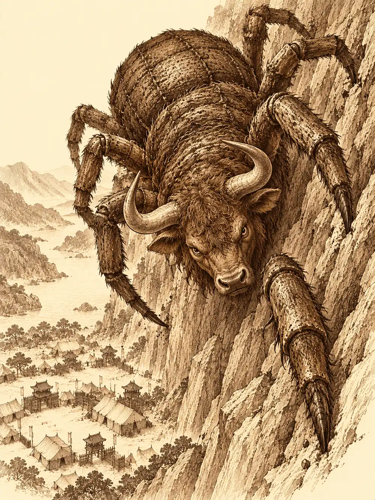

Capítulo 109
Las defensas de la puerta
Libro VII · La Reina Cuervo
En el campamento del Sur llovía siempre. El barro se metía por las juntas de las armaduras y por las costuras de las tiendas, y Aka había dejado de intentar que la suya brillara. Llevaba días moviendo hombres de un lado a otro como piezas sobre un tablero. A los últimos samuráis que había mandado demasiado cerca de las torres los había visto convertirse en carbonilla, así que ahora los quería lejos de aquella influencia, en puestos de vigía desde donde se viera la puerta sin mirarla demasiado, y otros cerca de las aldeas, donde los sectarios atacaban sin aviso. Los cazadores le daban más quebraderos de cabeza que el enemigo. Desde la muerte de Sirth nadie los dirigía, y ella era comandante del ejército, no niñera de nadie.
Katari y Arwen habían pasado aquellos días recorriendo los campos que rodeaban las bases, y por donde pasaban las cosechas crecían más deprisa y más llenas. Pero las anteriores, las que se habían recogido antes de su paso, estaban enfermas, y todo el mundo había comido de ellas. Una debilidad se iba extendiendo por los cuerpos, un cansancio que no se curaba durmiendo. Katari atendía también a los samuráis a los que había tocado la puerta. Entraba en sus sueños mientras dormían y veía lo que ellos habían visto allí: cada uno algo que deseaba con todas sus fuerzas, ofrecido y después arrebatado por un dios terrible. Les humedecía la frente, les hablaba bajito. No mejoraban.
Arwen se revolcaba en el barro como una croqueta.
Banzo terminó su turno en la taberna del campamento y cogió una de las raciones de los soldados. Llevaba días fijándose en un monje que nunca se acercaba a nadie, sentado solo con un bastón, y se la lanzó. El hombre ni se giró. Atrapó la bandeja en el aire con una rapidez que no le correspondía a su edad.
"Muy agradecido, señor. La comida de un buen hombre sabe mejor".
"Me llamo Banzo, de los cazadores".
"Yo soy Sanzan. Un monje".
A Banzo se le encendió la cara.
"¿El monje Tang? ¿El amigo de Sun?".
"Amigo no. Más bien su guía".
"Pues que sepa que lo anda buscando como un loco. ¿Por qué no va usted a verlo?".
"Ay, grandullón. Tiene que ser él quien vaya a buscar su destino. El destino no va a ir a buscarlo a él".
Banzo le ofreció su ayuda para lo que necesitara y se alejó de espaldas, haciendo reverencias torpes, hasta que Arwen lo vio de lejos y se le lanzó encima llena de barro. Se le subió por los brazos y por la cabeza como un remolino.
El portal brilló y salió Danifae.
Arwen se escondió detrás de Katari antes de que nadie dijera nada. Katari se puso delante de la niña. Aka sacó el arco y disparó, y la flecha se clavó junto a los pies de la drow. Danifae la miró, miró la flecha, desenvainó despacio sus dos espadas cortas y las dejó caer en el barro. Levantó las manos. Aka ordenó a sus soldados que la detuvieran y la registraran, y ella no se resistió.
Banzo se acercó con la cara cada vez más roja y humo saliéndole por la nariz.
"¿Has sido tú?".
"¿El qué?".
Le dio una bofetada. Danifae giró la cabeza con el golpe y la devolvió.
"Me gustaría saber de qué me acusáis".
"Esta asquerosa ha intentado asesinar a Calista. Y ha intentado asesinar a la niña".
Danifae levantó una ceja. Sabía que Calista había estado herida; no sabía nada más. Preguntó por qué iba a querer atacarla. Banzo no tenía respuesta.
Los soldados encontraron en su bolsa cuerdas, comida, pociones, dos anillos de oro y una pelota. Aka trazó en el suelo un círculo de verdad para que nadie pudiera mentir dentro. Todos supieron enseguida que a la drow el hechizo le había resbalado. Podía decir lo que quisiera.
Danifae miró a Katari.
"Quería pedirte disculpas a ti. Eres la única que me ha tratado bien. Perdí los estribos y ataqué a esa pequeña".
"A mí no me pidas perdón. Pídeselo a ella".
Danifae le recordó a la druida que la había ayudado otras veces, que había traído las pruebas que la sacaron de la prisión, que la había salvado en aquel balneario. Katari se puso morada. Aka, roja. Danifae se arrodilló delante de la niña y sacó la pelota.
"Sé que no fue culpa tuya tragarte la esfera. Mi reacción no fue la adecuada. Como te gustaban las pelotas, te he traído una".
La hizo botar. Arwen la siguió con la mirada, arriba y abajo. La drow se la hizo rodar por el suelo. La niña la tocó con un dedo, la apretó, se la iba a llevar a la boca cuando Katari se la quitó para comprobar que no tuviera nada. Era una pelota normal. Se la devolvió, y Arwen se puso a morderla. Katari le preguntó en silvano si iba a perdonarla.
"Me da miedo. Pero podría intentarlo. Si no lleva esas cosas puntiagudas cerca de mí".
Danifae no entendía el silvano. Aka le explicó la condición. La drow se inclinó ante la niña.
Después le enseñó a Aka la marca de la Reina Araña bajo el pecho, la araña muerta cosida en la piel, y le explicó que las esferas tenían dentro el poder de los guardianes de Kuroto y que, cuando las reuniera todas, esperaba liberarse de su diosa. Aka no le notó mentira en la cara. Katari confirmó que a ella le había contado lo mismo, y añadió algo que había oído: que su hermano había llegado a la isla enviado por su madre.
Aka se llevó las manos a la cabeza. Nada le encajaba con lo que le había dicho Gelbreak.
"Vas a tener protección contra tu hermano. Y vas a estar vigilada. Tus armas las guardo yo. Te las daré cuando haya peligro".
Banzo había desenvainado el espadón de Gur mientras escuchaba, convencido de que aquello acabaría en una ejecución, y no ocultó que no estaba de acuerdo.
Danifae sacó entonces los dos anillos de oro. Llevaban grabados por dentro los nombres de Aka y de Katari.
"Los hice para vosotras antes de lo que pasó. Quería llevarme bien con la pareja de mi amiga. Un monje los bendijo para fortalecer vuestra unión. No es un anillo de boda, ¿eh?".
Katari los examinó con magia y brillaron. Aka se arrodilló delante de Katari y le dio el anillo que llevaba su nombre. Se los pusieron. Las dos sintieron que algo les crecía por dentro, que se atraían más, como si el amor que ya se tenían se hubiera calentado de golpe.
Un soldado llegó corriendo sin casco, con una hombrera colgando.
"¡Comandante! ¡Vienen! Han arrasado la avanzadilla. Vienen hacia aquí y son muchos".
Aka mandó llevarlo a la enfermería y avisar a los demás mandos para reforzar el campamento, pero la mayoría de las tropas estaban repartidas por la región. Antes de que terminara de dar las órdenes, una rana enorme con un arma de asta aterrizó en medio del campamento. Detrás llegaban tengu volando y otras cosas.
Aka le devolvió las espadas a Danifae sin mirarla y bendijo a los suyos. Katari llamó a sus osos y extendió espíritus que curaban a quien tocaban. Arwen trepaba por Banzo y se movía sobre él como sobre una montaña mientras el goliat repartía golpes. Danifae acuchilló a un tengu, se volvió hacia la rana y procuró que los golpes fueran a por ella para aliviar a los otros.
De lejos llegó un rugido con un final eléctrico, como un trueno que hubiera aprendido a gruñir. Banzo lo conocía. Lo había oído en la arena de Sho.
El nue entró por el arco del campamento y el cielo se cerró sobre él. Los rayos empezaron a caer una y otra vez, sobre los osos, sobre los tengu, sobre los defensores, y mataron a muchas de las criaturas que Katari había llamado. Aka le clavaba flechas desde la cobertura. Banzo terminó con la rana y con varios tengu, aunque quedó muy malherido. Por las paredes de roca bajó una araña enorme con cabeza de toro. Arwen le dio a Banzo una libertad de movimiento que no se veía pero que le soltaba los pies, y las telarañas no lograron atraparlo.
Un rayo alcanzó a Katari y la tiró al barro. Danifae desapareció y reapareció a su lado y le hizo beber una poción.
"¿Por qué tanta desconfianza? Eres mi amiga".
Banzo ya no podía sostener a Arwen en primera línea. La arrancó de su espalda y la lanzó por el aire hacia la drow. Danifae la atrapó y la apretó contra el pecho justo cuando la araña escupía una telaraña, y la esquivó con la niña en brazos.
Arwen curó desde la espalda de Danifae. Después volvió corriendo junto a Katari y se plantó delante de ella para que no la golpearan.
"¡A mi mamá no!".
Las dos se turnaban: espíritus, curas, animales. Cuando los osos cayeron, Katari llamó a unos lobos. Aka disparaba sin parar. Banzo le abrió el vientre al nue con un tajo y la bestia cayó al suelo con la serpiente de la cola retorciéndose todavía; las nubes se deshicieron sobre el campamento y volvió a verse el sol. Aún quedaban la araña y los últimos tengu. Danifae ayudó a acabar con ellos. Al último lo atravesaron los espíritus de los ancestros de Banzo, que salieron de sus tatuajes en forma de humo y lo remataron sin que el goliat moviera un dedo.
No llegó nada más. Arwen saltaba sobre Banzo preguntando qué eran aquellas cosas que habían brillado.
Danifae se acercó a Aka con las espadas por la empuñadura y se las entregó.
"Gracias", dijo la comandante, muy bajito. A la drow se le dibujó una sonrisa.
Se volvió hacia Banzo.
"La próxima vez avísame antes de lanzarme a la pequeña. Buen trabajo".
Banzo le reconoció el esfuerzo sin dejar de mirarla de reojo. Danifae le preguntó a Arwen si le había gustado la pelota, y la niña la mordió con ganas. Katari se apoyó en el hombro de la drow.
"Gracias por salvarme. Te invito a comer".
"Ya te dije que no iba a dejar que te pasara nada".
Se fueron juntas a la taberna. Arwen, transformada en osa, se quedó jugando en el barro hasta que alguien se asomó a la puerta de la taberna y dijo la palabra comida.

Aka se fue a organizar empalizadas y balistas y lanzó al cielo un ojo mágico para vigilar desde arriba si quedaba algo escondido en las montañas. Banzo le pidió permiso para ir con Gur y Caniza a buscar supervivientes en la avanzadilla y madera para las defensas. Se lo dio. Antes de irse, el goliat levantó el arma hacia los samuráis que se habían ido acercando.
"Ahora lo estáis viendo. Ya sabéis a quién tenéis que acudir cuando queráis protección. Limpiaos la boca antes de volver a hablar mal de los cazadores".
Le dieron las gracias. Por debajo, algunos murmuraban por las formas.
Calista llegó al campamento con sus papeles y encontró a Banzo herido, trabajando en las defensas. Le curó. Él le contó el ataque, la avanzadilla destruida, la escasez que se comía la moral de la tropa, y le avisó de que Danifae seguía por allí. Ella se puso tensa. Esperó a Aka con Kurobane, pero la comandante había salido hacia el puesto médico, así que dejó en su tienda una carta: según sus averiguaciones, los sectarios conservaban dos bases donde invocaban criaturas, y había que estudiar sus rituales para impedirlos. Kurobane añadió una copia del mapa anotado. Volvieron juntos a la capital bajo el mismo paraguas.
Banzo encontró a Gur en una arboleda, junto a un yokai muerto y una muchacha que acababa de salvar y que se marchó en cuanto llegó el goliat. Le contó lo del nue y lo de la avanzadilla. Gur lamentó no haber estado cerca y se preparó para salir enseguida, aunque necesitó que Banzo lo guiara, y el propio Banzo dudó un buen rato al señalar el sudeste. En la avanzadilla arrasada, Banzo reconoció entre los muertos a una samurái con la que había trabajado. Danifae apareció desarmada entre los escombros y les señaló arrastres y arañazos en el suelo: quizá se habían llevado cautivos con vida. Los ancestros del goliat no le mostraron nada. Aka llegó siguiendo el humo con su ojo mágico. Devolvió a la drow sus armas por un rato, prohibió seguir el rastro sin reunir antes a más cazadores, y entre todos despejaron escombros, improvisaron un puesto de vigía y juntaron los cuerpos, a los que la comandante dio reposo con un conjuro. Banzo le habló a Danifae de sus sospechas. Ella las negó y se ofreció a ayudar. Él le habló de la daga marina, y por primera vez los dos pensaron lo mismo: que alguien podía tener interés en romper una alianza.
En Sho, Kurobane vio a Calista en una azotea junto al puerto, mirando el mar. Ella le confesó que no estaba bien. Ya habían intentado matarla otras veces y temía que quien lo había ordenado mandara a alguien más; en Sho era vulnerable, y su muerte podía romper unas relaciones con la corte del mar que ya estaban tensas. Necesitaba una sombra que le guardara la espalda. Kurobane se ofreció. Cuando abrió los brazos para consolarla, ella le dijo que no le parecía adecuado, y él lo respetó. Le contó algo que le había enseñado su maestro sobre las sonrisas. Se quedaron mirando el agua.
Gelbreak los esperaba en la base afilando su estoque. Miró a Kurobane mucho rato, le quitó mérito a su trabajo con los informes y terminó insinuando que su conocimiento de los cultos, su origen sureño y su cara tapada encajaban demasiado bien con un infiltrado. Calista lo defendió. Kurobane, sin perder la calma, contó otra vez que habían sacrificado a su pueblo y que en el Monasterio de las Sombras le habían enseñado a reconocer a los sectarios. El drow se fue sin aceptar nada. El joven se quedó vigilando desde el tejado. Si lo necesitaban, dijo, podían llamarlo Osuray.
Guxi llegó a la base agotado, cargado de documentos, y se preparó un café. Calista se acercó preocupada por la procedencia de aquellos papeles y descubrió que el funcionario con quien llevaba semanas colaborando por escrito era él. Ella quería reparar las relaciones con la corte del rey dragón sirviendo bien al shogunato; él tenía más trabajo del que cabía en un día. Se repartieron los impuestos y los envíos de suministros, hablaron de revisar cuentas y pesos para encontrar irregularidades, y entre taza y taza sacaron adelante media tarde de trabajo.
Calista le confió a Kurobane la daga. Seguía sin recordar del atacante más que una figura negra algo más alta que ella; el arma, le dijo, era compatible con alguien de alta cuna de su pueblo. Le pidió que no se la diera a nadie, que era cuestión de vida o muerte. Kurobane la llevó a la biblioteca y buscó en libros élficos y comunes las casas nobles de los tritones. Allí encontró a Erk entre volúmenes de demonios y sectas. La arquera recordaba, por lo que le habían contado, una misión del shogun en la que el hijo del Rey del Mar se había hecho pasar por su padre para provocar una guerra, hasta que el rey llegó y le echó la bronca. Kurobane comparó las gemas de la empuñadura con los dibujos de los escudos de armas.
Banzo y Danifae fueron a ver a Calista para ofrecer su ayuda. Ella les dijo que la daga y la investigación estaban en otras manos y no dijo cuáles. Danifae insistió en que el arma podía revelar más que su procedencia y pidió ver la herida. Calista se la enseñó con Banzo de espaldas. La drow reconoció que era profunda y ofreció sus contactos. No obtuvo la daga. A solas, Banzo le pidió perdón por haber sospechado de ella. Danifae le dijo que quería recuperar la confianza de los cazadores y lo invitó a sake.
Después la drow cruzó Sho con la capucha puesta, siguió una marca discreta en la esquina de un callejón, bajó por una escalera oscura y llegó a un refugio clandestino. Una mujer de pelo blanco la observaba. De las sombras salieron varios shinobi y la rodearon.
"Tranquilos. Vengo desarmada. Solo quiero intercambiar información".
Camino de una aldea del Sur, Jin se quitó la máscara delante de Banzo. La llevaba, le dijo, para recordar su pasado. Venía de una tierra muy lejana que creía desaparecida. A los seis años lo raptaron para convertirlo en uno de los llamados soldados mágicos; lo encerraron, experimentaron con él, y aun allí encontró algo parecido a una familia. Le costaba hablar de eso. Banzo no insistió. La aldea tenía daños y pocos soldados, pero aguantaba.
Banzo y Gelbreak organizaron una competición con Calista de jueza. En la primera prueba, Banzo partió todas las piedras que le lanzaban y el drow falló quejándose del sol. En la segunda había que sacar un secreto sin ser descubierto. Gelbreak se coló invisible por una ventana de la biblioteca y vio los libros de Kurobane y la daga marina; Banzo no cabía por la ventana, imitó muy mal a Higeki y volvió inventándose que Kurobane llevaba aparatos en los dientes. En la última había que traerle a Calista un regalo del mar. El drow obligó con su magia a Banzo a flotar y volvió con una perla. Banzo se ató una piedra para hundirse y casi se ahoga; Gelbreak tuvo que sacarlo. Banzo le ofreció a Calista una perla pequeña y sin valor con un cumplido que la emocionó. Ella le dio la victoria al drow, porque eran las normas.
Entonces apareció Danifae y preguntó por el atacante de Calista. Seguía libre, le respondió la tritón; ella se había buscado protección. Gelbreak se puso tenso. Su hermana le tocó el pecho y le dijo algo en infracomún, y él se calmó. Danifae se fue. Gelbreak quiso reclamar su premio, pero Banzo tenía miedo, y a los tres les quedó mal sabor de boca.
Esa tarde, en la casa del té, Calista le dio las gracias a Kurobane con una ceremonia. Le dijo que dudaba de que un tritón hubiera hecho el ataque en tierra firme; la daga podía ser una pista falsa, y quien la empuñó no tenía por qué ser quien lo encargó. Había que encontrar primero al atacante, alguien que había tenido acceso al arma de un noble. Le contó que se había instalado en un refugio bajo el agua cuyo sitio no le reveló. Él podía escoltarla en las misiones; en su refugio se protegía sola.
Arwen saltó sobre Gelbreak desde unos arbustos y él, creyendo que lo atacaban, la estampó contra el suelo. La niña rompió a llorar y Gur acudió a recogerla. Un temblor sacudió la capital. Arwen le mordió la nariz al drow, se convirtió en osa, él desenvainó, y Gur acabó la pelea de un martillazo y les exigió que se comportaran. La niña contó que Danifae la había perseguido por la esfera que se tragó, y Gelbreak intentó sacársela prometiéndole regalos y juegos. Gur le contó cómo habían sacado otra esfera de su maestro y cómo había acabado en manos de su hermana. El drow no sabía cómo funcionaban aquellas esferas, pero estaba seguro de que ella tramaba algo terrible.
"Si te pones de su parte", le dijo a Gur, "ten cuidado".
Gur se llevó a Arwen a nadar.
En Ukio, Sun reunió a sus compañeros y les contó lo del robo de los papeles de su isla y su miedo a que alguien quisiera alargar la crisis. Calista sacó la planta de las cocinas de palacio: tóxica si se tomaba poco a poco, mucho tiempo. Sospechaba que alguien estaba haciendo daño al shogun y al gobierno, quizá alguien al servicio de Otakemaru. Guxi tenía menos dinero del esperado para los cazadores y no sabía si era un desvío. Danifae irrumpió con unos rollos sellados con dos espadas negras cruzadas: papeles de productos y mercados controlados por las cofradías de ladrones. Le dijo a Calista que mirara las últimas columnas, y Calista se quedó sola leyéndolos.
Al salir de allí, Banzo y Danifae fueron a buscar a Gur y lo encontraron dormido junto al lago; el goliat lo despertó reventando un sapo junto a su oreja y acabaron los tres en el agua, hundiéndole la cabeza a la drow entre risas, hasta que una sanguijuela se le enganchó a Banzo en el trasero y salió corriendo por la orilla. Ya vestidos, Danifae propuso pedirle permiso a la comandante para seguir el rastro de la avanzadilla.
En Sho, Kurobane encontró a Gelbreak rascándose los brazos y le dijo que Calista estaba con Danifae en Ukio y le había pedido que lo avisara. El drow lo agarró con fuerza y le habló dentro de la cabeza para que se quedara. Kurobane insistió en que fuera a ayudarla.
Gelbreak echó a correr hacia el portal.